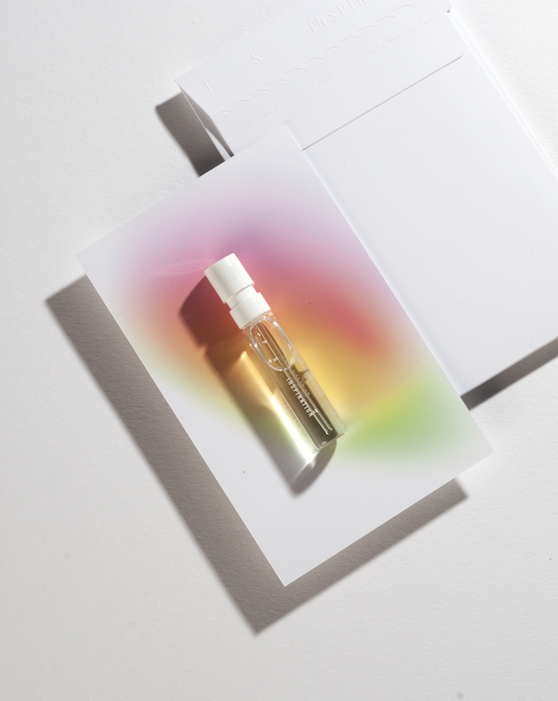

Екатерина Зинченко представила парфюмерный проект Pure Sense
В основе концепции бренда — исследование зависимости визуального восприятия и обоняния и сотрудничество с незрячими парфюмерами, которые и выступают авторами ароматов.
Миссия проекта — не только создать уникальный продукт в соответствии с международными стандартами и реализовать его на отечественному рынке, но и поддержать людей с особыми потребностями в их творческой реализации.
Линейка Pure Sense состоит из трех ароматов-состояний: Freedom (свобода), Inspiration (вдохновение) и Serenity (спокойствие).Каждый парфюм – символичная история жизни его создателя, вдохновленная дорогими сердцу воспоминаниями и эмоциями.
Ароматы бренда выводят парфюмерию за рамки гардероба, превращая их в инструмент управления состоянием и способ контакта с внутренним миром.Унисекс-концепция марки позволяет отказаться от гендерных условностей и использовать флакон вместе с любимым человеком, выбирая аромат не по male/female маркировке, а в соответствии с собственными ощущениями.
Posted On: 2020-04-17T21:00:00

Content Date: 2020-04-17
Download Date: 2021-05-13
Document ID: L0C04C05Y